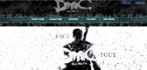
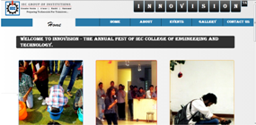
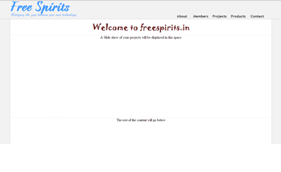

A fan site of the popular video game series - Devil May Cry built by me. I consider it as one of my best web design so far. The site is best viewed in google chrome web browser. Click here to visit the website.

The website I have been building for my college's technical fest - Innovision '14. Its one of my recent works.Its not yet complete but still worth a lookClick here to visit the page. Use chrome web browser for best experience.

A web layout I designed for the NGO freespirits. Although its hollow and has absolutely no content in it. It is my neatest and most "professional" layout so far and that's why I've added it over here. Click here to view the page.